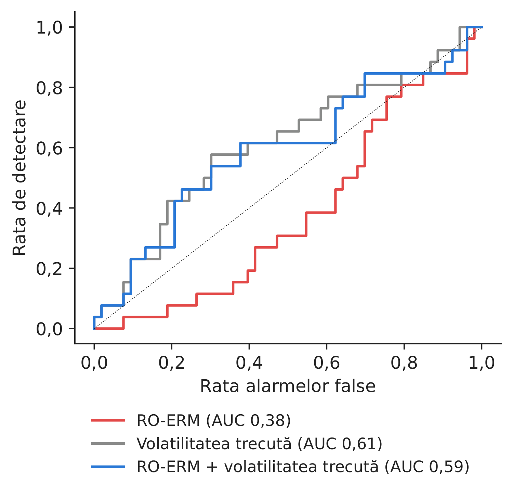
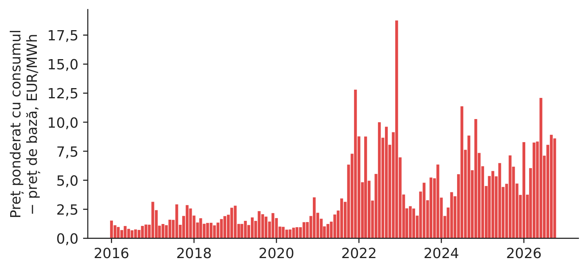
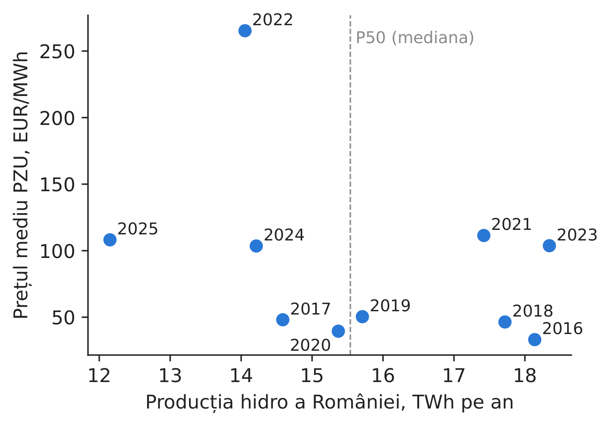
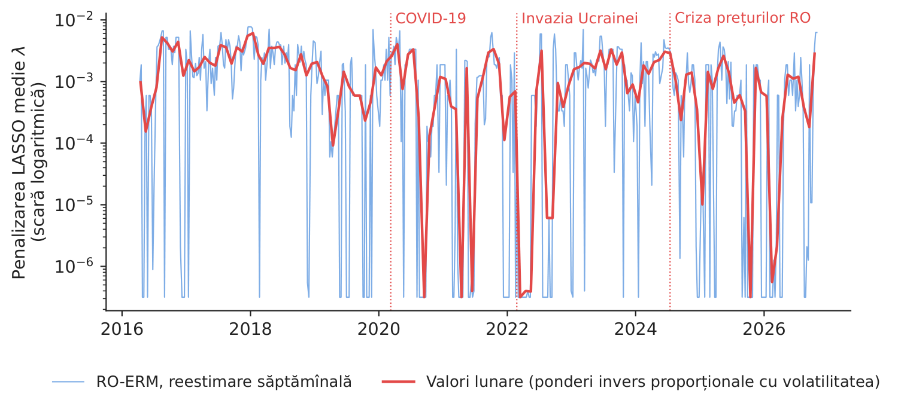

Studiul de caz 4 · Cursul 4
Un indicator de risc pentru companiile energetice — stresul sistemic, riscul preț–volum și anii secetoși
Prof. dr. Daniel Traian PELE
Academia de Studii Economice din București, Departamentul de Statistică și Econometrie
Academia Română, Institutul de Prognoză Economică
Lucrarea de referință
Toma, F.-M., Dima, D.-M., Grecu, R., Pele, D. T. și Lessmann, S. (2026). Energy Financial Risk Meter: Systemic risk in the EU energy sector. SSRN (Social Science Research Network), document de lucru 6985301. doi:10.2139/ssrn.6985301
Problema decizională
Comitetul de risc al unui grup energetic din România se reunește lunar și dorește un tablou de bord unic, care să răspundă la trei întrebări. Se află sectorul energetic, în ansamblul său, într-o situație de stres (astfel încît finanțarea, garanțiile și riscul de contrapartidă pot deveni brusc o problemă)? Cît pierde activitatea de furnizare din cauză că clienții consumă cel mai mult atunci cînd energia este scumpă (riscul preț–volum)? Cît ne-ar costa un an secetos în activitatea hidro, dacă producția așteptată a fost deja vîndută la termen? Prima întrebare face obiectul lucrării; celelalte două privesc riscurile prin care companiile energetice se deosebesc de bănci.
Lucrarea de referință
Întrebarea de cercetare. Se poate construi un indicator de risc sistemic specific sectorului energetic din UE (Uniunea Europeană), cum influențează riscul geopolitic acest indicator și se propagă riscul din sectorul energetic către piețele de acțiuni și de credit (secțiunile 1–2.4)? Poate un manager de risc care urmărește astăzi indicatorul să anticipeze mai bine evenimentele nefavorabile decît cu ajutorul indicilor generali de stres (secțiunea 4.8)?
Datele. Randamentele zilnice și capitalizarea bursieră a 100 de companii energetice europene, precum și factori la nivel european (contracte futures pe gazele TTF, Title Transfer Facility și pe Brent, prețul spot Brent, indicii STOXX Europe 600 Oil & Gas și STOXX Europe 600, VSTOXX, indicele de volatilitate al EURO STOXX 50, stocurile de țiței), LSEG (London Stock Exchange Group), aprilie 2016 – aprilie 2026; indicele zilnic de risc geopolitic Caldara–Iacoviello (GPRD), marjele CDS (credit default swap) la 5 ani și, ca reper, indicatorul compozit de stres sistemic al BCE (CISS) (secțiunea 3.3).
Principalele rezultate ale lucrării.
- Indicele EFRM (Energy Financial Risk Meter) surprinde principalele evenimente sistemice de pe piețele energetice: pandemia de COVID-19 din 2020 și războiul dintre Rusia și Ucraina din 2022 (rezumat). Testele Bai–Perron identifică rupturi structurale în seria lunară EFRM în februarie 2020 și în iulie 2021, iar EFRM devansează riscul geopolitic cu aproximativ șapte luni (secțiunea 3.4).
- Un canal geopolitic inactiv pînă atunci s-a activat odată cu invazia: răspunsul EFRM la un șoc geopolitic trece de la \(-0{,}2146\) pp înainte de război la \(+1{,}3082\) pp după declanșarea acestuia (TVP-VAR, model vectorial autoregresiv cu parametri variabili în timp, secțiunea 4.1.2), iar transmiterea riscului energetic către indicele STOXX 600 se reduce cu aproximativ 60 % (secțiunea 4.2.1).
- În afara eșantionului de estimare, pentru prognoza lunilor cu volatilitate ridicată în sectorul energetic: EFRM + CISS are AUC (aria de sub curba ROC, ROC = receiver operating characteristic) 0,731, EFRM singur 0,708, iar CISS singur 0,673 (58 de luni, 11 evenimente; tabelul „Out-of-Sample Probit Results”, secțiunea 4.8.3). EFRM este conceput pentru monitorizarea stresului sistemic; acest exercițiu măsoară conținutul informațional suplimentar pentru prognoză (secțiunea 4.8).
Metoda, pas cu pas
Intuiția metodei
Într-o zi cu pierderi mari, este afectată o singură companie sau toate deodată? Pentru fiecare companie modelăm cuantila de 5 % a randamentelor (zilele cu cele mai mari pierderi) în funcție de randamentele tuturor celorlalte companii și de prețurile petrolului și gazelor. Cînd legăturile sînt numeroase și greu de separat, estimarea are nevoie de o penalizare \(\lambda\) mai mare pentru a rămîne stabilă. Media acestei penalizări pe toate companiile este indicatorul de risc.
Pentru compania \(j\) și o fereastră mobilă de \(n\) zile, lucrarea estimează o regresie cuantilică pentru \(\tau=5\,\%\) (secțiunea 3.1.1)
unde \(X_{j,t}\) este randamentul logaritmic al companiei \(j\), \(\mathbf A_{j,t}\) conține randamentele celorlalte \(J-1\) companii și cei \(M\) factori macroeconomici, \(\rho_\tau\) este funcția de pierdere de tip „pinball”, asociată cuantilei de 5 %, iar \(\|\boldsymbol\beta_j\|_1=\sum_k|\beta_{j,k}|\) este penalizarea LASSO (Least Absolute Shrinkage and Selection Operator), care anulează coeficienții legăturilor slabe. Valoarea \(\lambda_j\) se alege prin minimizarea criteriului \(\mathrm{GACV}=\sum_t\rho_\tau(\hat u_t)/(n-\mathrm{df})\), unde df este numărul de coeficienți nenuli. Indicele este \(\mathrm{EFRM}_t=\frac1J\sum_j\lambda_{j,t}\); valorile lunare sînt medii ale valorilor zilnice, cu ponderi proporționale cu \(1/\sigma_t\), inversul volatilității indicelui pe 5 zile (secțiunea 3.1.2). Riscurile specifice sectorului energetic nu necesită un model: prima preț–volum dintr-o lună este diferența dintre prețul ponderat cu consumul și prețul de bază, \(\sum_h p_hL_h/\sum_hL_h-\frac1H\sum_hp_h\); costul de recumpărare într-un an secetos pentru un producător care a vîndut la termen producția hidro mediană (P50) este \(\max(0,\mathrm{P50}-Q_y)\times\bar p_y\), unde \(Q_y\) este producția, iar \(\bar p_y\) prețul spot mediu din anul \(y\).
În practică
Un indicator sistemic necesită un eșantion larg de companii; pentru un singur grup din România, riscurile care influențează efectiv profitul sînt profilul cererii și condițiile meteorologice. Includeți-le în același tablou de bord, exprimate în EUR.
Replicare pe datele cursului
Notebook-ul C4_notebook_RO.ipynb conține trei părți. (A) Un indicator „RO-ERM [indicator de risc energetic pentru companiile din România]” construit din OMV Petrom, Romgaz și Nuclearelectrica, cu Brent și Henry Hub ca factori: 2.800 de zile de tranzacționare, ferestre de 250 de zile reestimate la fiecare 5 zile (510 ferestre, 04.2016–10.2026); lungimea ferestrei este aleasă de noi.
(B) Un model probit estimat pe o fereastră care se extinde treptat pentru evenimentul „volatilitatea din luna următoare depășește percentila 75”, evaluat pe 79 de luni din afara eșantionului de estimare (26 de evenimente); CISS nu se află în datele cursului, de aceea reperul este volatilitatea trecută.
(C) Prețurile și consumul orar, pentru prima preț–volum; producția hidro zilnică (din lacuri de acumulare și pe firul apei), pentru costul anului secetos.

Figura 1. RO-ERM: penalizarea LASSO medie pentru cele trei companii.
Sursa: estimările noastre pe date EODHD (EOD Historical Data, furnizor de date de piață) și Yahoo Finance, 04.2016–10.2026.

Figura 2. Curbele ROC în afara eșantionului de estimare, pentru lunile cu volatilitate ridicată.
Sursa: modelele noastre probit; 79 de luni.
Tabelul 1. Avertizarea timpurie privind o lună cu volatilitate ridicată (AUC = aria de sub curba ROC; 0,5 = lipsa puterii de discriminare; scorul Brier relativ \(>0\) = mai bun decît frecvența de bază). Cea mai bună valoare este marcată cu aldine.
| Variabila de avertizare pentru luna următoare | AUC | Scorul Brier relativ |
|---|---|---|
| RO-ERM singur | 0,382 | \(-\)0,029 |
| Volatilitatea trecută singură | 0,612 | 0,003 |
| RO-ERM + volatilitatea trecută | 0,593 | \(-\)0,012 |
Sursa: calcule proprii. Lucrarea (100 de companii din UE, reper CISS): EFRM 0,708, CISS 0,673, EFRM + CISS 0,731.
Ce arată datele (A–B). Indicatorul nostru construit din trei companii atinge maximul în 12.2017; este mai ridicat în martie–iunie 2020 (2,583 \(\times10^{-3}\)) decît în 2018–2019 (1,852) și mai scăzut în timpul războiului din 2022 (0,894). Ca instrument de avertizare timpurie, obține un AUC de 0,382, în timp ce volatilitatea trecută, singură, ajunge la 0,612. Cu numai patru variabile explicative, criteriul GACV (validare încrucișată aproximativă generalizată) alege o penalizare nulă sau aproape nulă în 54 % din perechile companie–fereastră, deci \(\lambda\) conține puțină informație într-o rețea atît de mică. Concluzia pentru management: dimensiunea eșantionului contează — un indicator sistemic are nevoie de un număr mare de companii, ca în cadrul cu 100 de companii din lucrare.

Figura 3. Prima preț–volum lunară: diferența dintre prețul ponderat cu consumul și prețul de bază.
Sursa: energy-charts.info; date orare, 2016–oct. 2026.

Figura 4. Producția hidro anuală și prețul spot mediu.
Sursa: energy-charts.info; 2016–2025.
Tabelul 2. Riscul anului secetos pentru un producător hidro care a vîndut la termen producția mediană (P50 = 15,54 TWh). Cel mai mare cost este marcat cu aldine.
| Anul | Producția hidro, TWh | Prețul spot, EUR/MWh | Deficit față de P50, TWh | Costul recumpărării, mil. EUR |
|---|---|---|---|---|
| 2016 | 18,14 | 33,2 | 0,00 | 0 |
| 2017 | 14,59 | 48,1 | 0,95 | 46 |
| 2018 | 17,72 | 46,4 | 0,00 | 0 |
| 2019 | 15,71 | 50,4 | 0,00 | 0 |
| 2020 | 15,37 | 39,5 | 0,17 | 7 |
| 2021 | 17,42 | 111,4 | 0,00 | 0 |
| 2022 | 14,05 | 265,3 | 1,49 | 394 |
| 2023 | 18,35 | 103,7 | 0,00 | 0 |
| 2024 | 14,21 | 103,5 | 1,33 | 137 |
| 2025 | 12,15 | 108,2 | 3,39 | 367 |
Sursa: calcule proprii pe date energy-charts.info (producția hidro națională, toți producătorii).
Riscurile specifice sectorului energetic (C). Acoperirea profilului de consum casnic cu o bandă constantă presupune o primă medie de 3,6 % în 2016–2019, de 8,4 EUR/MWh (3,3 %) în 2022 și de 5,4 EUR/MWh (5,2 %) în 2025 — costul vîrfurilor de seară și al orelor de prînz cu producție solară mare. Producția hidro și prețul sînt corelate negativ (corelație \(-\)0,36): anii secetoși sînt și ani cu prețuri mari. După ce a vîndut la termen producția P50, un producător de dimensiunea întregului parc hidro din România ar fi trebuit să recumpere 1,49 TWh în 2022, pentru aproximativ 394 de milioane EUR, și 3,39 TWh în 2025, pentru aproximativ 367 de milioane EUR. Cifra relevantă pentru decizie: cel mai nefavorabil an dintre ultimii zece (2022) a costat 394 de milioane EUR — această valoare stabilește dimensiunea rezervei de lichiditate și justifică vînzări la termen sub nivelul P50.
Întrebări pentru discuție
- Ce acoperire, ca număr de companii și de factori de piață, ar cere comitetul dumneavoastră de risc unui indicator sistemic? Cum ați combina un indicator sectorial european cu expunerile proprii ale companiei?
- Lucrarea arată că indicatorul crește cu cîteva luni înaintea riscului geopolitic (din iulie 2021). Ce măsuri concrete ar putea lua o companie într-un astfel de interval?
- Cine răspunde în compania dumneavoastră de prima preț–volum: departamentul de vînzări, cel de tranzacționare sau cel de risc? Cum este inclusă această primă în prețul ofertelor de furnizare?
- Pe baza tabelului privind producția hidro, ce parte din producția așteptată ați vinde la termen cu un an înainte (P50, P75, P90)? Ce compromis presupune această alegere?
- Pe care dintre cele trei riscuri le-ați raporta lunar consiliului de administrație și în ce unitate de măsură (puncte de indice, EUR, MWh)?
Limitele replicării
(i) Indicatorul nostru folosește 3 companii, fără TTF zilnic, fără GPRD sau CISS, cu o lungime a ferestrei aleasă de noi; este o ilustrare didactică, nu indicele EFRM. (ii) Calculul recumpărării folosește întregul parc hidro național și prețul mediu anual; în realitate, un producător recumpără în anumite luni, la prețurile din acele luni. (iii) Prima preț–volum se calculează pe consumul național, nu pe portofoliul propriu al unui furnizor.
Studiul de caz 4 pe scurt
- ÎntrebareSe află sectorul energetic în stres și cît ne costă profilul cererii și anii secetoși?
- DateSNP, SNG, SNN, Brent, Henry Hub, date zilnice 2015–2026; prețul și consumul orar; producția hidro zilnică.
- MetodăRegresie cuantilică LASSO (\(\tau\)=5 %), penalizarea medie; probit + AUC; prima preț–volum și recumpărarea P50.
- RezultatLucrarea (100 de companii): EFRM, AUC 0,708; versiunea noastră cu 3 companii: 0,382 — dimensiunea eșantionului contează. Anul secetos 2022: 394 de mil. EUR.
- DecizieFolosiți un indicator european larg pentru stresul sistemic; dimensionați lichiditatea în funcție de riscul anilor secetoși și de profilul cererii.

Sursa: RO-ERM-ul nostru pe date EODHD și Yahoo Finance, 04.2016–10.2026.
Abrevieri
| AUC | aria de sub curba ROC, ROC = receiver operating characteristic |
|---|---|
| BCE | Banca Centrală Europeană |
| CDS | credit default swap |
| CISS | indicatorul compozit de stres sistemic |
| EFRM | Energy Financial Risk Meter |
| EODHD | EOD Historical Data, furnizor de date de piață |
| GACV | validare încrucișată aproximativă generalizată |
| GPRD | indicele zilnic de risc geopolitic |
| LASSO | Least Absolute Shrinkage and Selection Operator |
| LSEG | London Stock Exchange Group |
| RO-ERM | indicator de risc energetic pentru companiile din România |
| ROC | receiver operating characteristic |
| SNG | simbolul bursier al Romgaz |
| SNN | simbolul bursier al Nuclearelectrica |
| SNP | simbolul bursier al OMV Petrom |
| TTF | Title Transfer Facility |
| TVP-VAR | model vectorial autoregresiv cu parametri variabili în timp |
| UE | Uniunea Europeană |
| VSTOXX | indicele de volatilitate al EURO STOXX 50 |
Textul, cifrele, graficele și tabelele acestei pagini sînt cele ale studiului de caz; toate cifrele sînt calculate de notebook-ul studiului pe datele cursului.